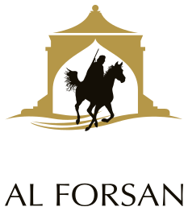
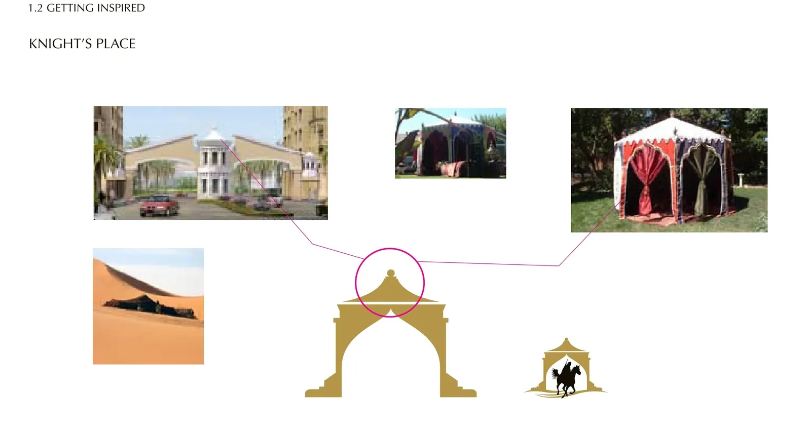
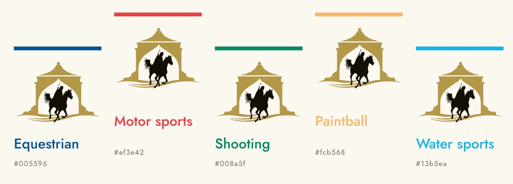
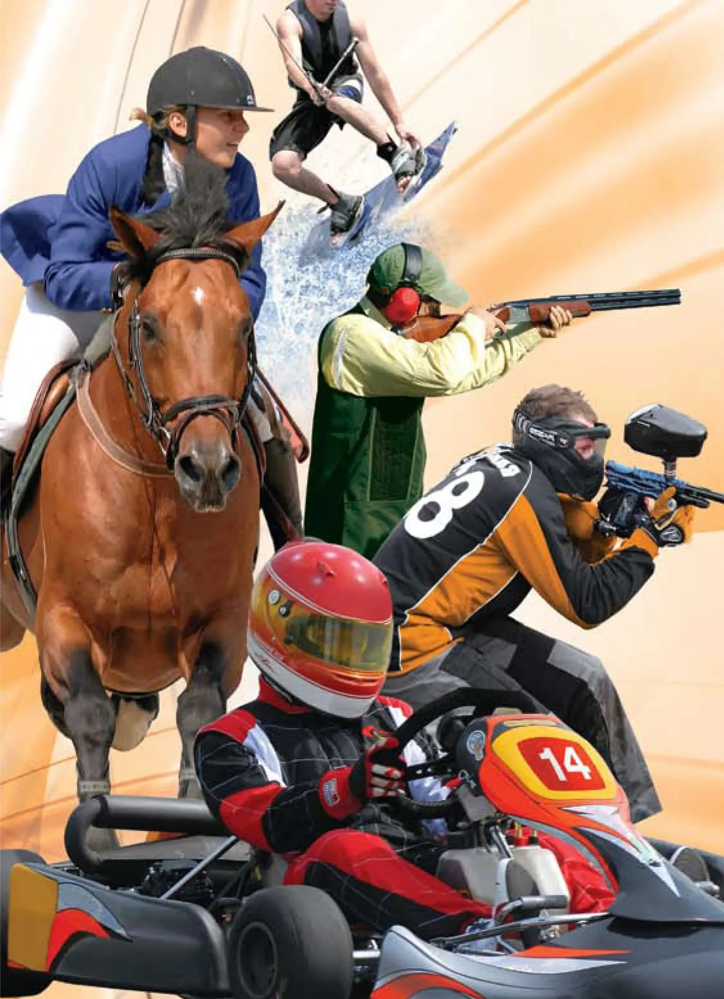
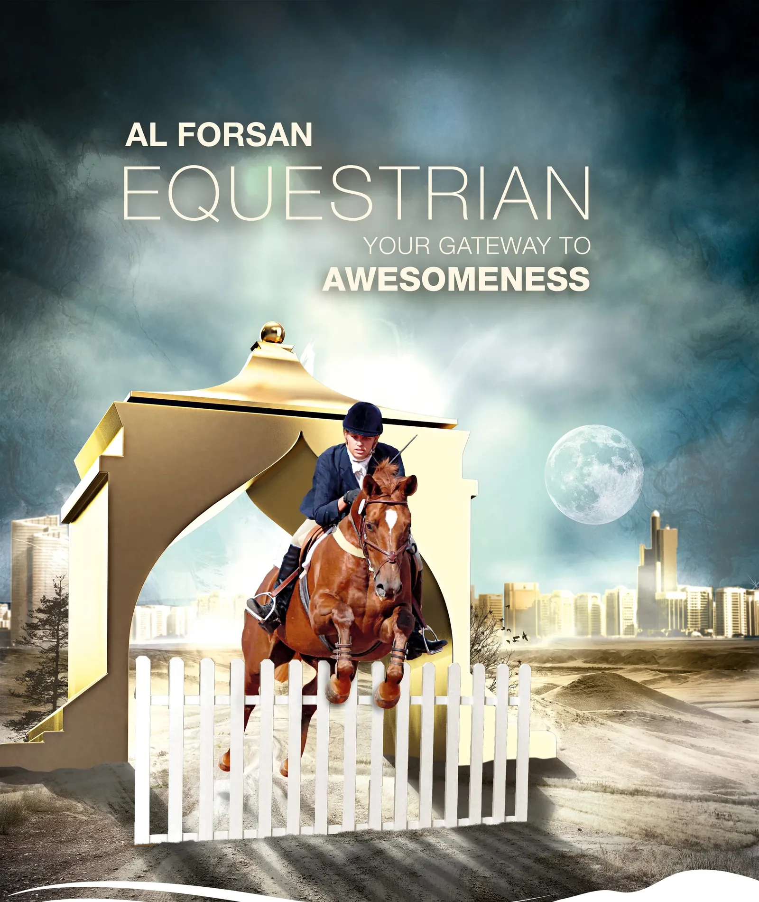
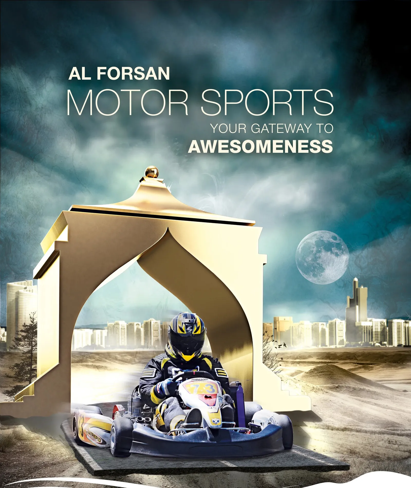
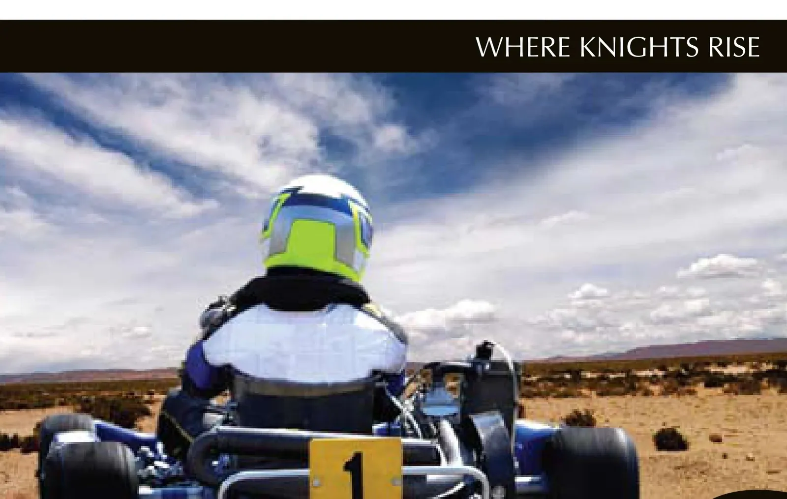
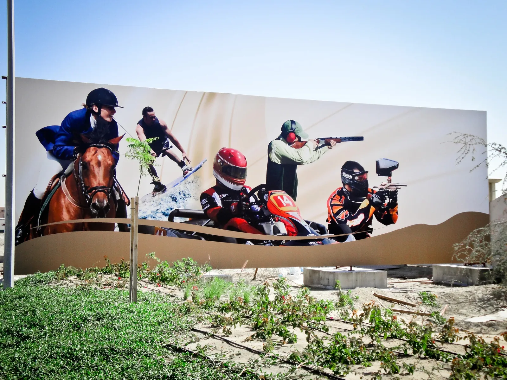
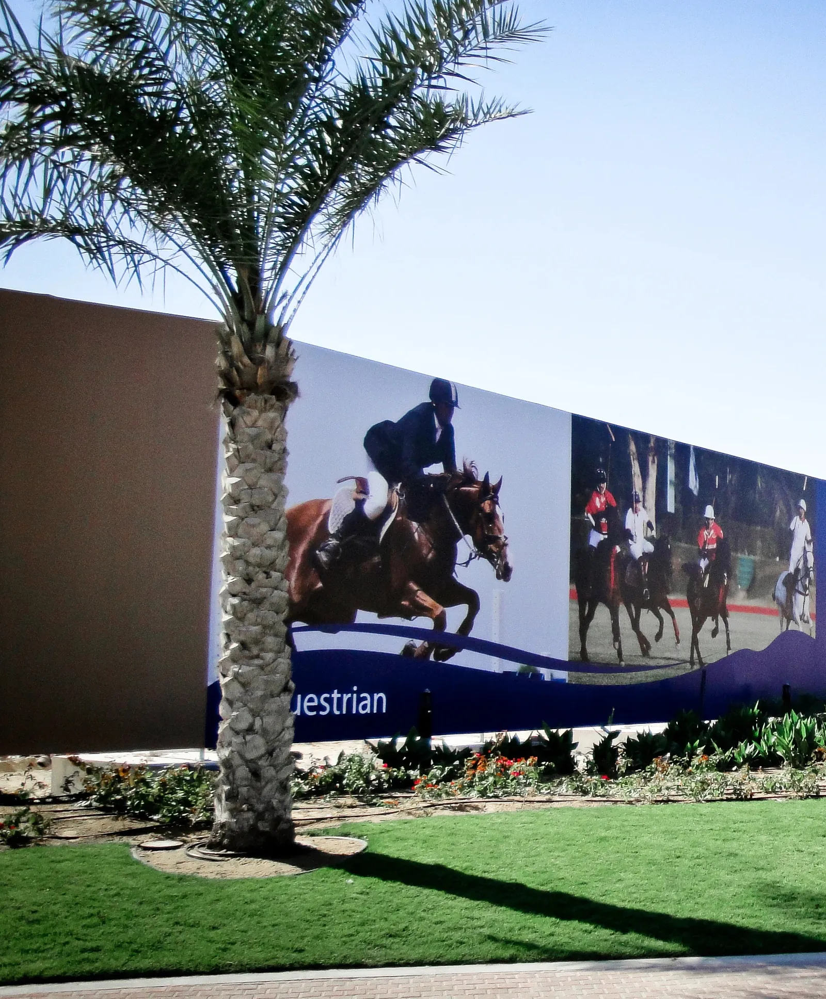
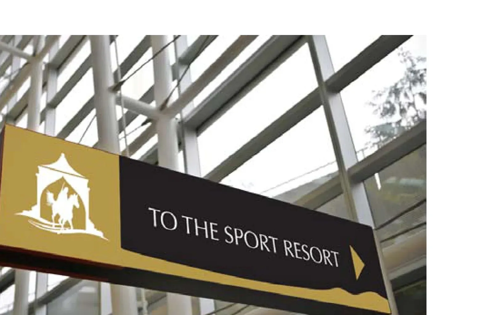

Al Forsan International Sports Resort · Abu Dhabi · 2009
The gate was already there. I made it a mark.
Creative direction · Al Forsan International Sports ResortAntBrush · Abu Dhabi · 2009–13
A resort for riding, motor sport, shooting, paintball and water sport, named for the knights. The architect’s gate of Al Forsan Village was already standing. I took its arch, set a rider inside it over the dunes, and made it the mark. One arch then carried five sports, a campaign and the signs on site.

The idea
The arch came from the gate.
The architect’s entrance gate of Al Forsan Village was already standing. I took its arch and the peak of a Bedouin tent, set a rider inside, and made it the mark. One arch then held five sport centres, each in its own colour.


The campaign
Your gateway to awesomeness.
Every sport, out of one gate: a rider, a shooter, a paintballer, a kart and a wakeboarder, moving at once. Then one advertisement for each centre.





In the desert
Along the road, as the resort was built.
Hoardings ran for hundreds of metres around the site. The signs took each centre’s colour.



The full story
Every step, in order.
For PPM, the owner group; the resort is the brand. Identity approved in March 2009; the resort’s agency from 2009 to 2013.
See the full story